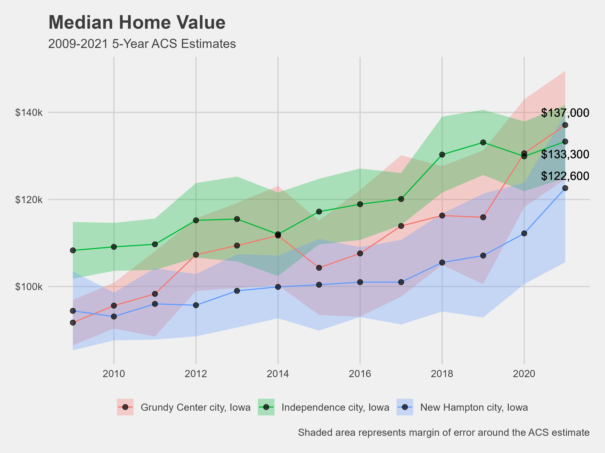
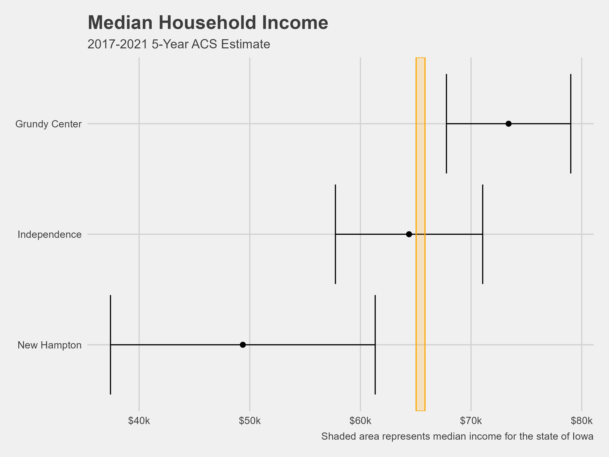
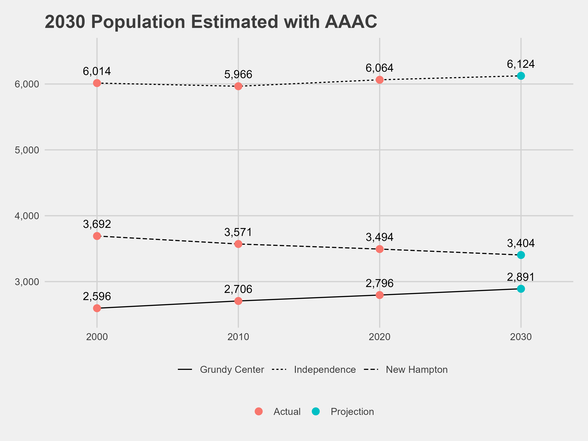
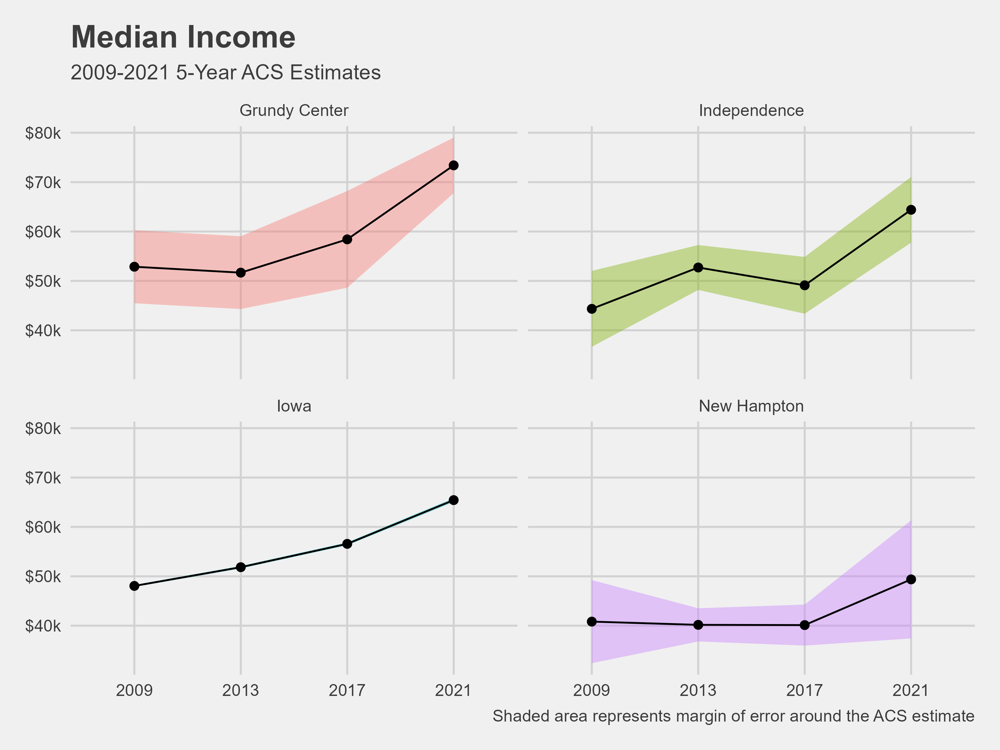
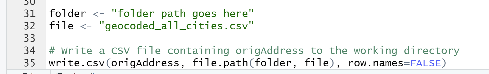

Housing Team Week 6 Wrap-Up
WinVEST Project
On Monday and Tuesday of week six, the DSPG group traveled to Grundy Center, New Hampton and Independence, Iowa. In groups of 3-4 people, we walked around residential areas and observed the condition of houses and lots. The Fulcrum app was used to record observations. We assigned good, fair and poor ratings to characteristics such as: Roof, gutter, landscape, siding, and sidewalk to the house.

While in residential neighborhoods, we also gave general impressions of blocks by observing presence and quality of: neighborhood sidewalks, street lights, way-finding signs, storm drainage systems, curb cuts and street trees.
Demographic Profiles
One of the goals of the project has been to provide demographic profiles of three cities: Independence, New Hampton and Grundy Center. We want to show characteristics related to economics, housing and population, and how these characteristics have been changing through the years or how they are expected to change in the future. Several graphs were made in R.






Progress on AI Models
So far, all models needed have been implemented! The accuracy will continue to improve the more they are trained. Now what is needed is a way to get the model outputs into a format that is useful for us. We need to write the outputs to a csv file. The script below is used to write to a CSV file in the correct attribute column based on the address being evaluated.

Mapping
One of our clients wishes to see something related to the project in the form of maps. One idea is to use maps to display well-trained AI model ratings for landscapes, siding, gutters etc. This will allow us and our clients to visualize where houses in good condition are versus lower condition.
To visualize addresses for the WinVEST cities and Slater, first we needed to geocode them (get a latitude and longitude for each address). Base code was from storybench.

Addresses are plotted in QGIS using the coordinates. There are some addresses that are not in the correct place (highlighted below). This is something to look into next week.

Preparing to visualize AI-generated data
A sample map was created in which gutter quality for houses in the city are shown.

Meeting with Mason City Assessor
On Thursday we met online with Tara Brueggeman, an Assessor for Mason City, and Erin Mullenix, one of our clients. We learned many things from this meeting. These are our main takeaways:
The data provided by Beacon and Vanguard is public but we are not able to web scrape. However, city and county assessor offices can get some data from Vanguard:
- A city/county assessor office has access to the Vanguard assessment data management system. Technically, they can run some customized reports on the data using SQL but many offices, especially in smaller IA communities, don’t know how to get data from the system using SQL.
We learned about the appraisal process Tara and her team follow:
Appraisal starts with the use of a blueprint. Find information on number of bedrooms and bathrooms, square footage, and details on basement.
Appraiser goes to the house to measure and inspect in-person. They used to go inside houses more often, but now homeowners are less comfortable with that. It does help to take a look at the inside of houses, especially because the inside does not always match blueprint. However, the condition of the exterior is usually a good indicator of the condition of the interior.
Tara will provide us with Iowa Real Property appraisal manual, which is is given to assessors. This may be useful for us because we could get better ideas of how different characteristics of a house are assessed.
How they aim to minimize bias when assessing?
No assessing when hungover, having a bad day, or if it’s raining outside.
The records are reviewed by another person before being finalized.
Things That Went Well
As we get down to the last few weeks, we are beginning to finish up major project tasks.
Things That Didn’t Go So Well
It’s taking a while to figure out how to write the model’s ratings to a csv file both effectively and efficiently.
Some Plans for Next Week
Meet with Erin Olsen-Douglas and Erin Mullenix (our clients) to give an update on what we have accomplished since last meeting. We plan to come prepared with several questions.
Create a teaser video and slides for our project.
Finish script that will allow us to have the model’s outputs in a csv file.
Use files to visualize the quality of houses.
Further train the models using new images of houses in Des Moines.
Questions
What was the weirdest or most shocking conversation you had with a resident while collecting data?